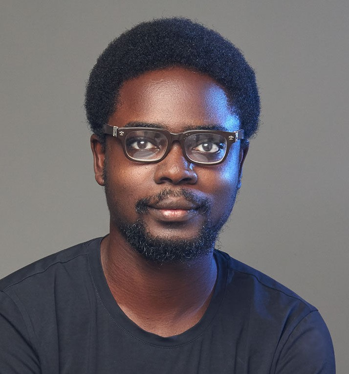

Godwin Akirinsade

Summary
Highly motivated and dedicated Microbiology graduate seeking a Graduate
Assistantship position in the Grant, Research, and Innovation Department.
Committed to contributing to research, grant proposal development, and
fostering innovation in a dynamic academic environment.
Education
Bachelor of Science in Microbiology (3.85/4.0)
June 2022
Ajayi Crowther University
Oyo, State.
Research Interests
- Microbiology
- Moleculr Biology
- Virology
- Immunology
- Genetics
Work Experience
International Institute of tropical agriculture
Industrial trainee
-
• DNA Extraction of bacteria samples brought in from countries which
included but were not limited to Gambia, Namibia, and Malawi
- Polymerase Chain Reaction of bacteria samples from water and soil
- Identification of microbes in the roots of Cowpea plants
- Performed Culture of microbes
- Agarose gel electrophoresis
- Performed plate counts
- Interpretations of DNA electrophoresis results
Alusoft Technologies
Web development instructor
- Design and develop websites
- Teach classes on the schedule for web development program
- Ensure that websites look good and function properly
- Implement new design features
Skills
Grant proposal development, Research methodologies, Data analysis,
Scientific writing, Project management, Excel, Microsoft Word, Python,
JavaScript, HTML and CSS, Bootstrap, React
Other